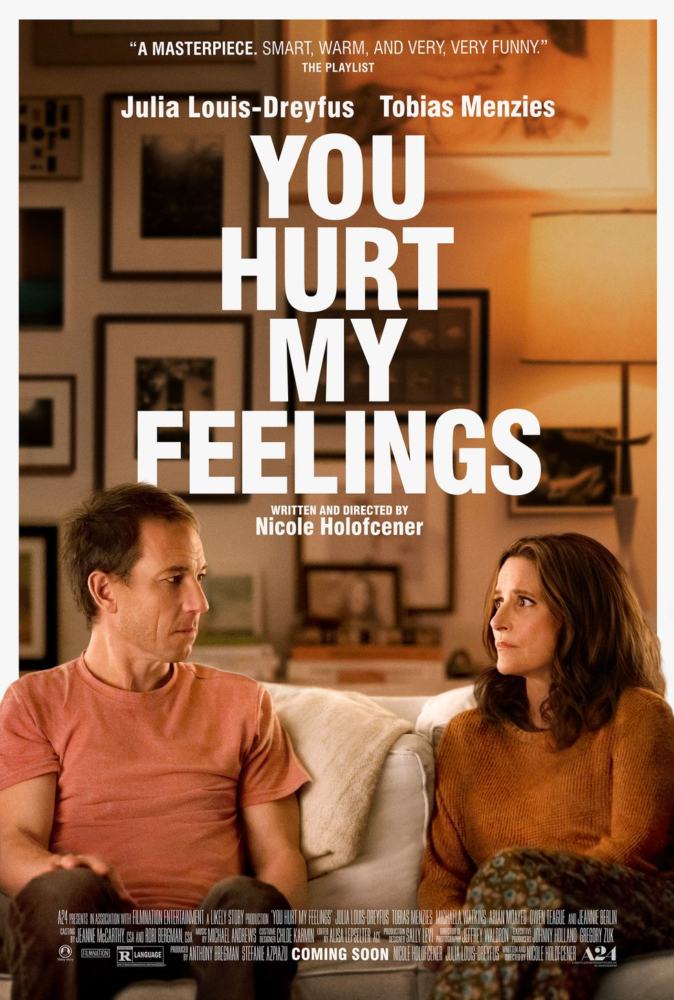

| Top 10 |
|
When reluctant bride Darcy's (Jennifer Lopez) destination wedding is taken over by a band of criminals, she and her husband-to-be (Josh Duhamel) go through the ultimate couple's therapy as they work together to save their guests. |
 |
Long-distance best friends Debby (Reese Witherspoon) and Peter (Ashton Kutcher) live on opposites coasts of the U.S. But when they swap homes and lives for a week, the two discover the life they thought they wanted may not be the life they actually need. |
 |
Prom season is in full swing, but Mandy (Peyton Elizabeth Lee) only cares about one thing: getting into Harvard. But when she's waitlisted, she's forced to ask the charming, popular guy named Graham (Blake Draper) — whose father has connections — for help. |
 |
This British rom-com had its premiere at the 2023 Sundance Film Festival and follows two twenty-somethings, both reeling from breakups, who have one unforgettable day in South London. Together, they help each other deal with their exes while also making themselves believe in romance again. |
 |
Dylan Sprouse stars in the film adaptation of Jamie McGuire's book of the same name. He plays Travis, a bad boy who continuously tries wooing good girl Abby (Virginia Gardner). After they make a bet and she loses, Abby has to spend a month at Travis's place. However, he doesn't know about her dark past that's coming back to haunt her. |
|
What would you do if the person you fell head over heels for ended up being a secret agent? That's what Cole (Chris Evans) has to figure out when he learns what Sadie's (Ana de Armas) day job is.
After only one date, the duo quickly get caught up in an international escapade to save the world. (And you thought your dating life was tough!) |
 |
After a travel executive goes through a breakup, she accepts an assignment to go undercover in Vietnam to learn about their tourist industry. While she's there, she begins to fall for her tour guide. |
 |
Priyanka Chopra Jonas plays a woman struggling to move on after the death of her fiancé. To handle her grief, she begins sending messages to his old phone number, which has now been reassigned to a new man, played by Sam Heughan.
Celine Dion is not only releasing new music for this flick — but she's also making her acting debut in it. |
|
This long-awaited live-action version of the 1989 Disney animated classic (which you can currently stream on Disney+) is about a mermaid who strikes up a deal with a sea witch to trade her beautiful voice for legs so she can explore life above sea level. On land, she meets the handsome Prince Eric. |
|  |
Another Sundance Film Festival premiere movie, You Hurt My Feelings is about a couple whose marriage is in trouble after a writer overhears her husband giving a brutally honest opinion of her new book. |